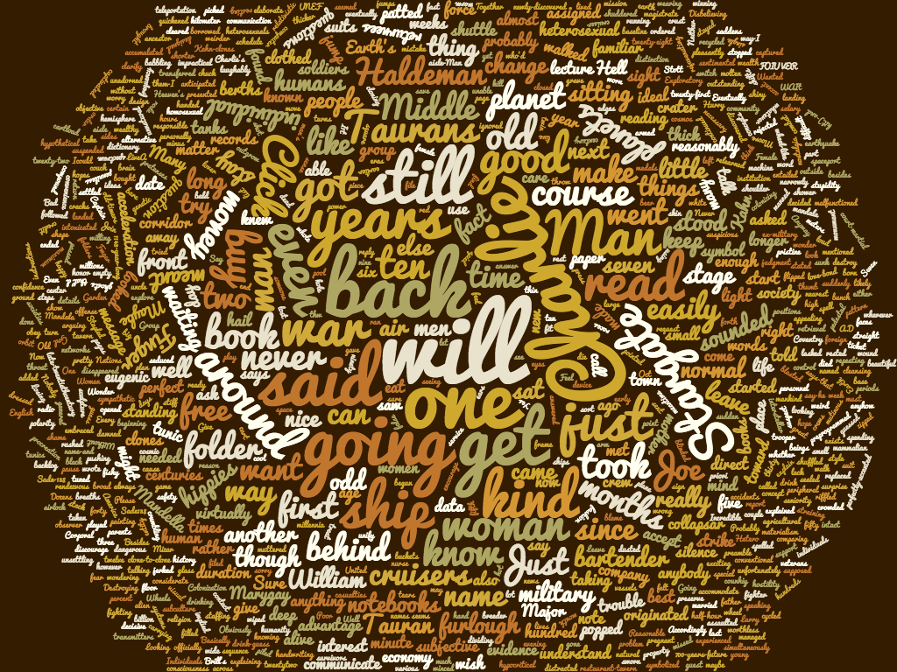
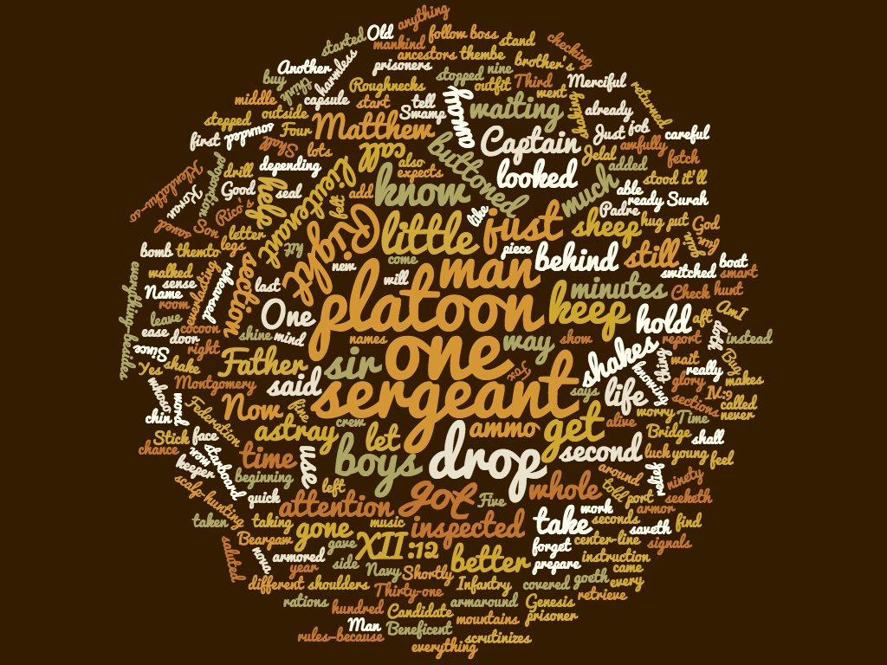

Conclusion
The United States Military resembles more closely to the one in Starship Troopers. Soldiers have a choice of whether to enroll in service to the country. However, unlike Heinlein’s military, a two-year service is not necessary to become a citizen. Military service is something that the people choose to take part in to just simply fight for their country. When looking at the real life implications regarding The Forever War, we see that soldiers today are also impacted by symptoms similar to Mandella. After soldiers came back from fighting Vietnam War, many of the developed PTSD and felt isolated from society.
 A brief look at the words used by each author shows us how different the focus on war was in each novel.
Heinlein is featured on the left and Haldeman is featured on the right.